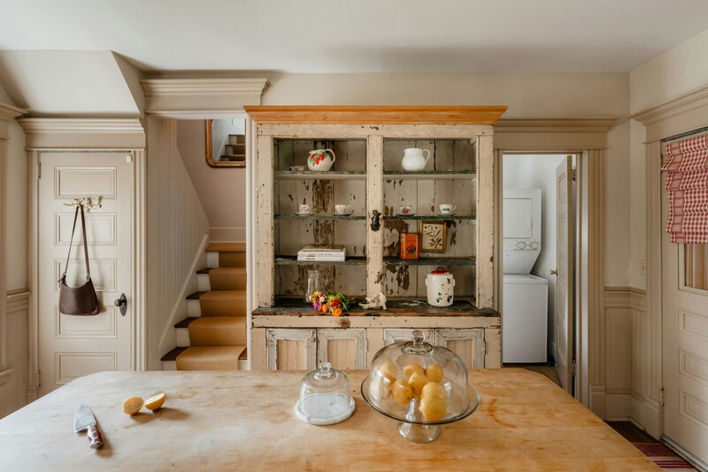

A clean house doesn't need a cabinet full of products. Most household cleaning can be handled with three things you probably already have: vinegar, a mild soap, and baking soda. The trick is knowing what each one does — and what they don't do together.

The baking soda and vinegar myth
You've seen it everywhere: mix baking soda and vinegar, watch it fizz, and somehow this cleans things. It doesn't.
What you're watching is an acid neutralizing a base. They cancel each other out and produce salt water, carbon dioxide, and a satisfying foam that does approximately nothing for cleaning. The fizz is theater.
Here's what actually works: use them separately. Scrub with baking soda first (the abrasive action does the work). Rinse. Then wipe with vinegar (the acid cuts any remaining residue). Sequential, not simultaneous. The order matters.
What each ingredient does
White vinegar is an acid that cuts through grease, dissolves hard water deposits, and neutralizes odors. Mix 1:1 with water in a spray bottle for an all-purpose cleaner. Skip it on stone countertops — the acid can etch granite and marble. For stone, use soap and water instead.
Baking soda is a mild abrasive that scrubs without scratching. Sprinkle it on sinks, tubs, and stovetops. Scrub with a damp cloth. Rinse.
Mild soap — castile or plain unscented bar soap grated and dissolved in warm water — handles floors, walls, and everyday surfaces. A tablespoon of soap in a gallon of warm water is your floor cleaner.
Start with one recipe
The all-purpose spray is the one to try first. Mix equal parts white vinegar and water in a spray bottle. Use it on countertops, tables, and most hard surfaces. It handles the majority of daily cleaning, costs pennies, and takes thirty seconds to refill.
The Simple Homekeeping Guide covers the full cleaning pantry, all five DIY recipes with notes fields, a cleaning rhythm that survives disruption, stain removal, laundry care, and the twice-a-year seasonal reset.
Simple Homekeeping Guide on Etsy →